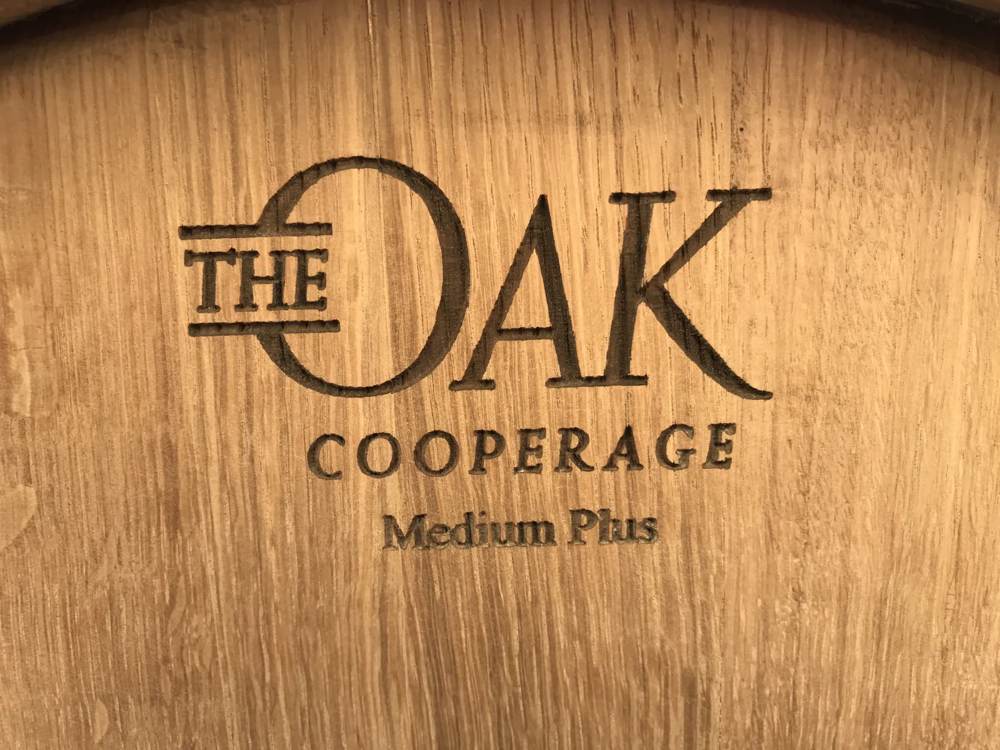
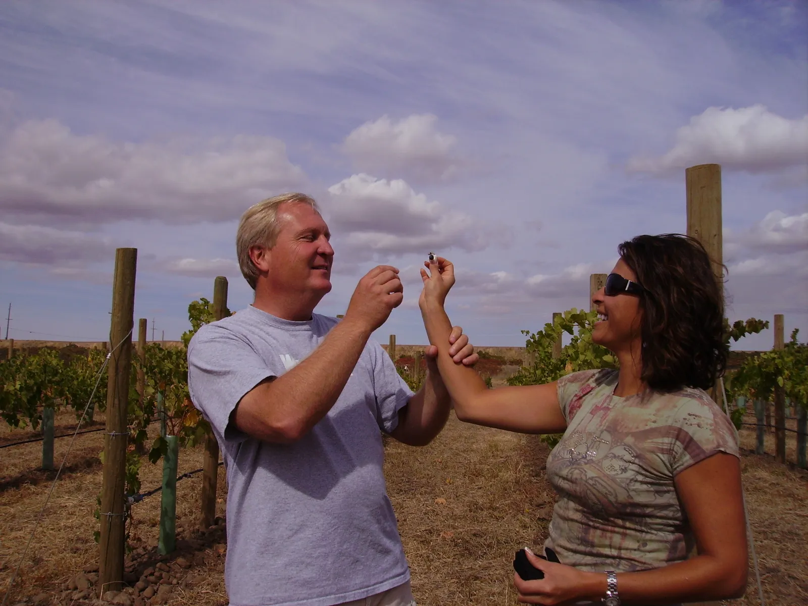
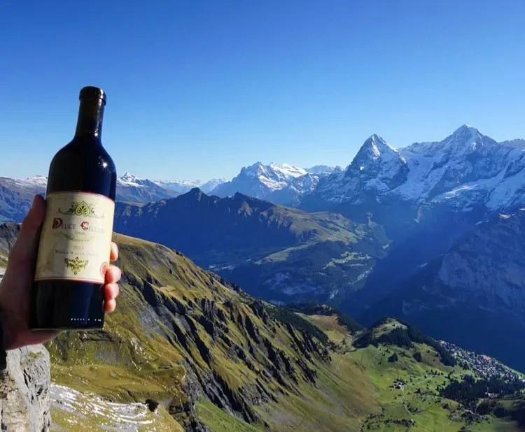
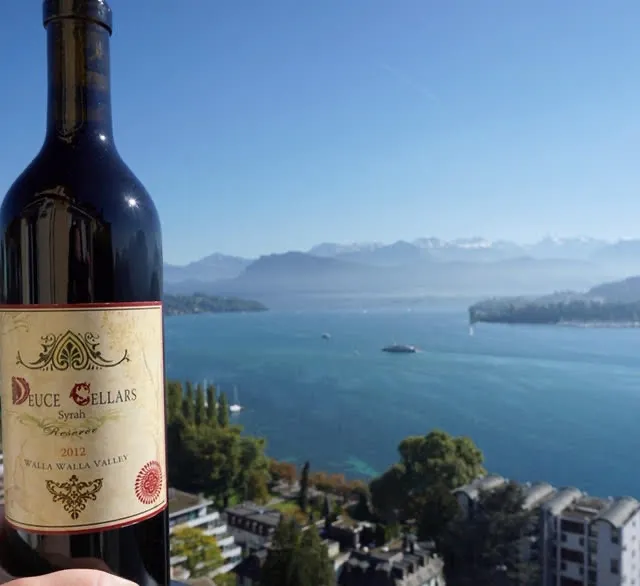
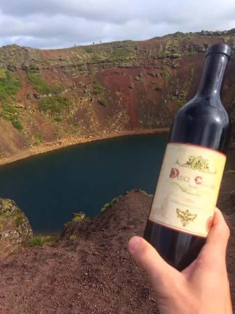
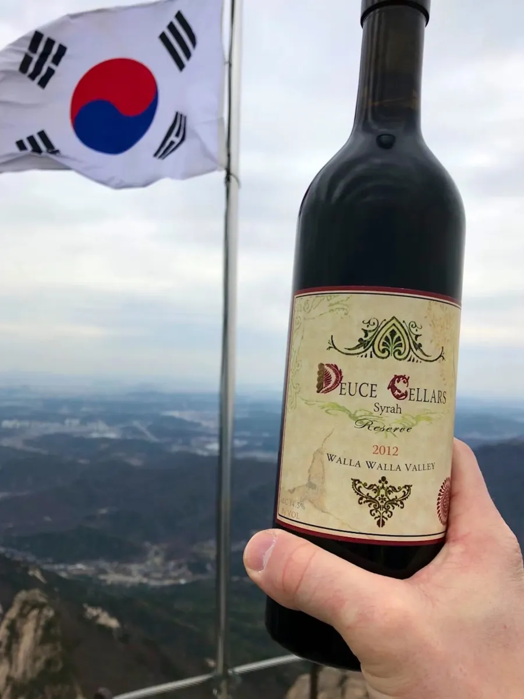
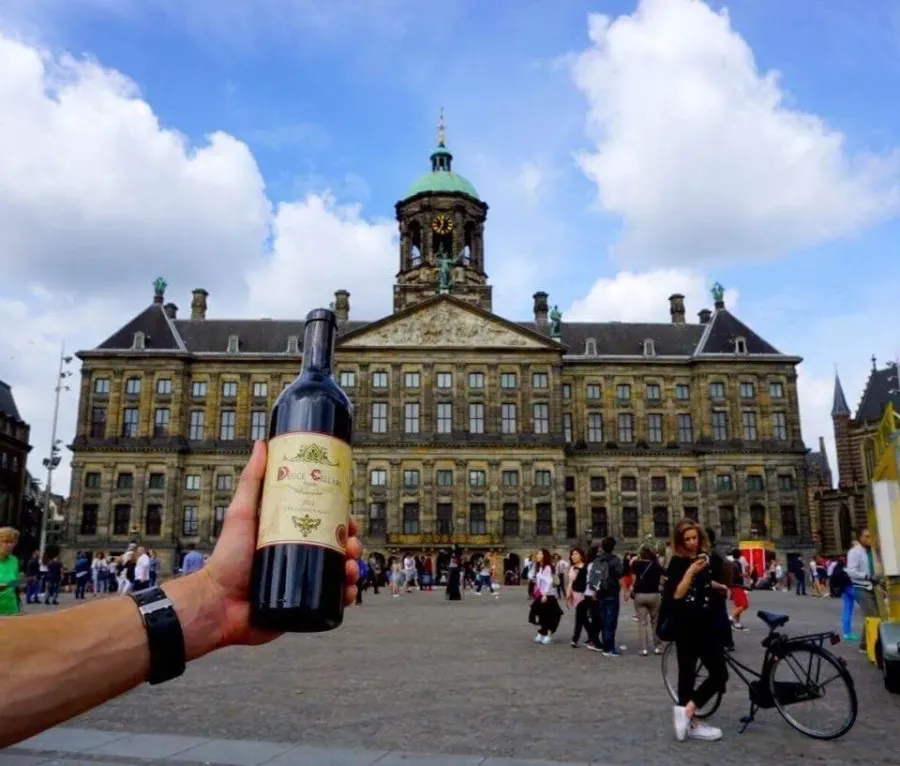
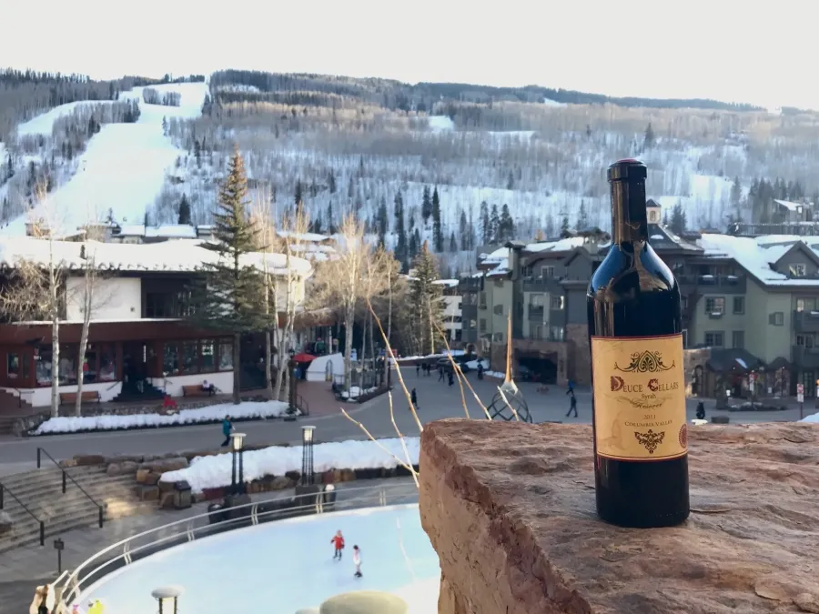

Big, luscious Washington Syrah.
Grown at Moonlight Vineyard, fermented whole-berry in open bins, and aged nearly three years in Missouri oak. Fewer than 300 cases a year.


2019 Reserve Syrah Walla Walla Valley
Judged blind, against the best.
2018 Reserve Syrah · Best of Class
SavorNW Wine Awards 2025
2017 Reserve Syrah
San Francisco Chronicle Wine Competition
2017 Reserve Syrah
Critics Challenge International
Limited Availability of Older Vintages
We hold back bottles from every vintage. A few are ready to share, along with vertical sets.

Thirty-four months in Missouri oak.
Deuce Cellars
Typical red wine
Every barrel comes from The Oak Cooperage in Higbee, Missouri, the cooperage owned by Silver Oak, and has since our very first vintage. Whole berries, open bins, hand punch-downs, no filtering. Then we wait.

A family wine, nearly twenty years in the making.
Leon and Laurie planted Moonlight Vineyard in 2006, harvested their first Syrah in 2008 and bottled it in July 2010. The fruit still comes from those same rows, and the recipe hasn’t changed.
The wine that travels.
Friends have carried Deuce from the Swiss Alps to Seoul. Wherever they go, a bottle seems to follow.







Private tastings, by appointment. Gather six or more and we’ll pour through the vintages with you.
First word on new releases.
Release notes, Deuce Days and library offers, a few times a year.